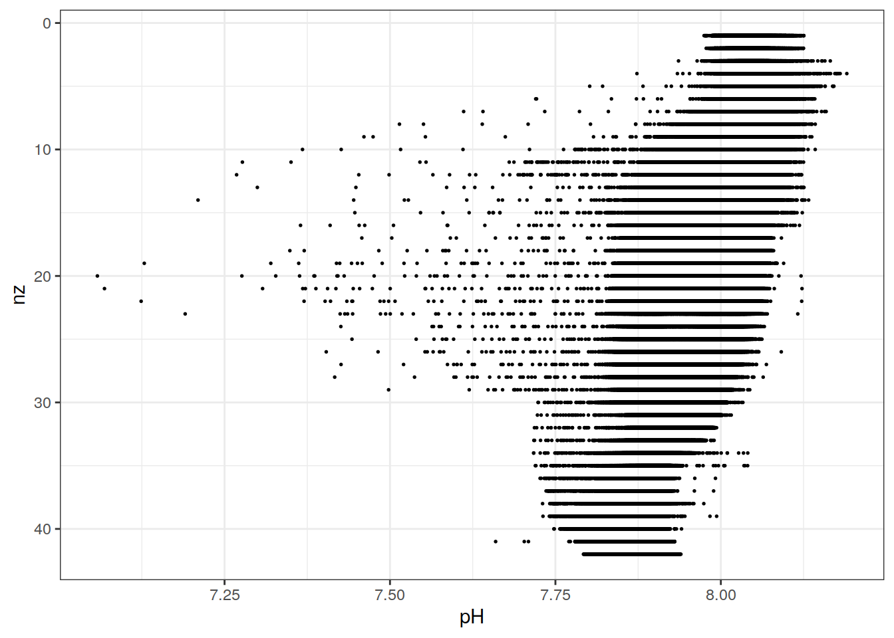
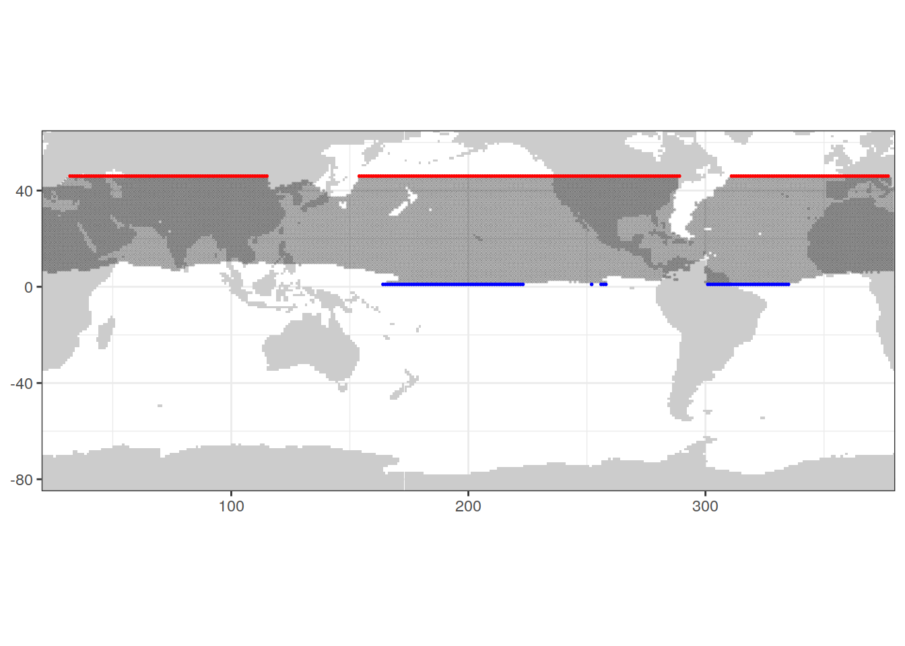

Last updated: 2022-03-25
Checks: 7 0
Knit directory: bgc_argo_r_argodata/
This reproducible R Markdown analysis was created with workflowr (version 1.7.0). The Checks tab describes the reproducibility checks that were applied when the results were created. The Past versions tab lists the development history.
Great! Since the R Markdown file has been committed to the Git repository, you know the exact version of the code that produced these results.
Great job! The global environment was empty. Objects defined in the global environment can affect the analysis in your R Markdown file in unknown ways. For reproduciblity it’s best to always run the code in an empty environment.
The command set.seed(20211008) was run prior to running the code in the R Markdown file. Setting a seed ensures that any results that rely on randomness, e.g. subsampling or permutations, are reproducible.
Great job! Recording the operating system, R version, and package versions is critical for reproducibility.
Nice! There were no cached chunks for this analysis, so you can be confident that you successfully produced the results during this run.
Great job! Using relative paths to the files within your workflowr project makes it easier to run your code on other machines.
Great! You are using Git for version control. Tracking code development and connecting the code version to the results is critical for reproducibility.
The results in this page were generated with repository version 5b93849. See the Past versions tab to see a history of the changes made to the R Markdown and HTML files.
Note that you need to be careful to ensure that all relevant files for the analysis have been committed to Git prior to generating the results (you can use wflow_publish or wflow_git_commit). workflowr only checks the R Markdown file, but you know if there are other scripts or data files that it depends on. Below is the status of the Git repository when the results were generated:
Ignored files:
Ignored: .RData
Ignored: .Rhistory
Ignored: .Rproj.user/
Ignored: output/
Untracked files:
Untracked: code/OceanSODA_argo_extremes.R
Untracked: code/creating_dataframe.R
Untracked: code/creating_map.R
Untracked: code/merging_oceanSODA_Argo.R
Untracked: code/pH_data_timeseries.R
Unstaged changes:
Modified: analysis/_site.yml
Modified: code/Workflowr_project_managment.R
Note that any generated files, e.g. HTML, png, CSS, etc., are not included in this status report because it is ok for generated content to have uncommitted changes.
These are the previous versions of the repository in which changes were made to the R Markdown (analysis/argo_clim_pH_ucsd.Rmd) and HTML (docs/argo_clim_pH_ucsd.html) files. If you’ve configured a remote Git repository (see ?wflow_git_remote), click on the hyperlinks in the table below to view the files as they were in that past version.
| File | Version | Author | Date | Message |
|---|---|---|---|---|
| Rmd | 5b93849 | pasqualina-vonlanthendinenna | 2022-03-25 | added climatology pages |
Explore the January climatology of Argo pH of Matt Mazloff, UCSD
library(tidyverse)── Attaching packages ─────────────────────────────────────── tidyverse 1.3.1 ──✓ ggplot2 3.3.5 ✓ purrr 0.3.4
✓ tibble 3.1.6 ✓ dplyr 1.0.7
✓ tidyr 1.1.4 ✓ stringr 1.4.0
✓ readr 2.1.1 ✓ forcats 0.5.1── Conflicts ────────────────────────────────────────── tidyverse_conflicts() ──
x dplyr::filter() masks stats::filter()
x dplyr::lag() masks stats::lag()library(ggOceanMaps)Loading required package: ggspatialSetting data download folder to a temporary folder /tmp/RtmpeS6Ejv.
This means that any downloaded map data need to be downloaded again
when you restart R. To avoid this problem, change the default path to a
permanent folder on your computer. Add following lines to your
.Rprofile file: {.ggOceanMapsenv <- new.env(); .ggOceanMapsenv$datapath
<- 'YourCustomPath'}. You can use usethis::edit_r_profile() to edit the
file.'~/Documents/ggOceanMapsLargeData'would make it in a writable
folder on most operating systems.library(oce)Loading required package: gswpath_updata <- "/nfs/kryo/work/updata"
path_argo_clim_ph <- paste0(path_updata, "/argo_climatology/pH")
path_argo_clim_temp <- paste0(path_updata, "/argo_climatology/temperature")
path_emlr_utilities <- "/nfs/kryo/work/jenmueller/emlr_cant/utilities/files/"
theme_set(theme_bw())# load in the ucsd climatology for january
clim_argo_ph_jan <- tidync::hyper_tibble(paste0(path_argo_clim_ph,
"/PHclim_15March2022_Prelim.nc"))
# 581 880 obs of 5 variables, with columns:
# pH (range from )
# nx (range from 1 to 360)
# ny (range from 1 to 46)
# nz (range from 1 to 42)
# t (value 1, corresponds to month 1 -> january)
#range(clim_argo_ph_jan$nx)
# 1 - 360
#range(clim_argo_ph_jan$ny)
# 1 - 46
#table(clim_argo_ph_jan$ny)
#range(clim_argo_ph_jan$nz)
# 1 - 42
#range(clim_argo_ph_jan$t)
# 1 (january only)
#table(is.na(clim_argo_ph_jan$pH))
# no NA pH values
#table(round(clim_argo_ph_jan$pH, digits = 0))
# 6516 occurrences of pH = 0
clim_argo_ph_jan <- clim_argo_ph_jan %>%
mutate(nx = as.double(nx),
ny = as.double(ny),
nz = as.double(nz)) %>%
mutate(lon = case_when(nx < 20 ~ nx +360,
TRUE ~ nx))
# range(clim_argo_ph_jan$lon)
# 20 to 279
map <-
read_rds(paste(path_emlr_utilities,
"map_landmask_WOA18.rds",
sep = ""))Plot the climatological pH profiles for January
clim_argo_ph_jan %>%
filter(pH != 0) %>%
ggplot(aes(x = pH,
y = nz))+
geom_point(aes(x = pH,
y = nz),
size = 0.3)+
scale_y_reverse()
Location of observations:
map+
geom_point(data = clim_argo_ph_jan %>% filter(nz == 1),
aes(x = lon,
y = ny),
size = 0.2,
alpha = 0.2)+
geom_point(data = clim_argo_ph_jan %>% filter(nz == 1,
ny == 1),
aes(x = lon,
y = ny),
size = 0.3,
col = 'blue')+
geom_point(data = clim_argo_ph_jan %>% filter(nz == 1,
ny == 46),
aes(x = lon,
y = ny),
size = 0.3,
col = 'red')
# the 46th latitude level is the northernmost latitude (ny = 46, lat = -30?)
# the 1st latitude level is the southernmost latitude (ny = 1, lat = -75?)
# clim_argo_ph_jan %>%
# mutate(lat = case_when(ny == 1 ~ -75,
# ny == 46 ~ -30,
# TRUE ~ 0))
# clim_argo_ph_jan %>%
# mutate(lat = case_when(ny == seq(1, 46, 1) ~ seq(-75, -30, 1)))
#
# clim_argo_ph_jan %>%
# mutate(lat = replace(ny, c(1:581880), seq(-75, -30, 1)))# clim_argo_temp_jan_2022 <- tidync::hyper_tibble(paste0(path_argo_clim_temp, "/RG_ArgoClim_202201_2019.nc"))
#
# range(clim_argo_temp_jan_2022$LONGITUDE)
# # range between 20.5 and 379.5
# range(clim_argo_temp_jan_2022$LATITUDE)
# # range between -64.5 and 79.5
# range(clim_argo_temp_jan_2022$TIME)
# table(clim_argo_temp_jan_2022$TIME)
# # time = 216.5 in the whole dataset (216.5 months since January 1 2004, corresponds to 15-01-2022)
#
# clim_argo_temp_2004_2018 <- tidync::hyper_tibble(paste0(path_argo_clim_temp, "/RG_ArgoClim_Temperature_2019.nc"))
# range(clim_argo_temp$LONGITUDE)
# # 20.5 to 379.5
# table(clim_argo_temp$LONGITUDE)
# # 1 degree intervals
# range(clim_argo_temp$LATITUDE)
# # -64.5 to 79.5
# range(clim_argo_temp$TIME)
# # 0.5 to 179.5
# # -> 01-01-2014 to 31-12-2018, centered on the 15th of each month
# range(clim_argo_temp$ARGO_TEMPERATURE_ANOMALY)
# # -12.543 to 13.413
# range(clim_argo_temp$PRESSURE)
# # 2.5 to 1975.0
#
# clim_argo_temp <- tidync::hyper_tibble(paste0(path_argo_clim_temp, "/RG_ArgoClim_33pfit_2019_mean.nc"))
# # 2004-2018
# # 66 030 591 obs of 6 variables, with columns:
# # ARGO_TEMPERATURE_MEAN
# # ARGO_SALINITY_MEAN
# # BATHYMETRY_MASK
# # LONGITUDE between 20.083 and 379.917º (1/6 degree intervals)
# # LATITUDE between -64.5 and 79.5º
# # PRESSURE between 2.5 and 1975.0 dbar
# range(clim_argo_temp$LONGITUDE)
# # 20.083 to 379.917
# range(clim_argo_temp$LATITUDE)
# # -64.5 to 79.5
# range(clim_argo_temp$ARGO_TEMPERATURE_MEAN)
# # -1.880 to 30.516
# range(clim_argo_temp$PRESSURE)
# # 2.5 to 1975.0
# table(clim_argo_temp$PRESSURE)
# # pressure levels: 2.5 dbar, 10-170 dbar by 10, 182.5, 200-440 dbar by 20, 462.5, 500-1350 dbar by 50, 12412.5, 1500-1900 dbar by 100, 1975 dbar
#
# clim_argo_temp <- tidync::hyper_tibble(paste0(path_argo_clim_temp, "/RG_ArgoClim_33pfit_2019_annual.nc"))
# # 88 035 468 obs of 6 variables, with columns:
# # ARGO_TEMPERATURE_ANNUAL_ANOMALY range between -9.270 and 10.982, with some values of 9.9692e+36
# # ARGO_SALINITY_ANNUAL_ANOMALY
# # LONGITUDE range between 20.25 and 379.75º, in 0.5º intervals
# # LATITUDE range between -64.75 and 79.75º, in 0.5º intervals
# # PRESSURE range between 2.5 and 1975 dbar
# # TIME ranging from 0.5 to 11.5 (15 January to 15 December)
# range(clim_argo_temp$TIME)
# # 0.5 to 11.5 -> 15-January to 15-December
# range(clim_argo_temp$ARGO_TEMPERATURE_ANNUAL_ANOMALY)
# table(round(clim_argo_temp$ARGO_TEMPERATURE_ANNUAL_ANOMALY, digits = 0))
# clim_argo_temp_filtered <- clim_argo_temp %>%
# filter(ARGO_TEMPERATURE_ANNUAL_ANOMALY < 10^35)
# range(clim_argo_temp_filtered$ARGO_TEMPERATURE_ANNUAL_ANOMALY)
# # -9.270 to 10.982
# range(clim_argo_temp$LONGITUDE)
# # 20.25 to 379.75 (every 0.5 degrees)
# range(clim_argo_temp$LATITUDE)
# # -64.75 to 79.75 (every 0.5 degrees)
# range(clim_argo_temp$PRESSURE)
# # 2.5 to 1975.0 dbar
sessionInfo()R version 4.1.2 (2021-11-01)
Platform: x86_64-pc-linux-gnu (64-bit)
Running under: openSUSE Leap 15.3
Matrix products: default
BLAS: /usr/local/R-4.1.2/lib64/R/lib/libRblas.so
LAPACK: /usr/local/R-4.1.2/lib64/R/lib/libRlapack.so
locale:
[1] LC_CTYPE=en_US.UTF-8 LC_NUMERIC=C
[3] LC_TIME=en_US.UTF-8 LC_COLLATE=en_US.UTF-8
[5] LC_MONETARY=en_US.UTF-8 LC_MESSAGES=en_US.UTF-8
[7] LC_PAPER=en_US.UTF-8 LC_NAME=C
[9] LC_ADDRESS=C LC_TELEPHONE=C
[11] LC_MEASUREMENT=en_US.UTF-8 LC_IDENTIFICATION=C
attached base packages:
[1] stats graphics grDevices utils datasets methods base
other attached packages:
[1] oce_1.5-0 gsw_1.0-6 ggOceanMaps_1.2.6 ggspatial_1.1.5
[5] forcats_0.5.1 stringr_1.4.0 dplyr_1.0.7 purrr_0.3.4
[9] readr_2.1.1 tidyr_1.1.4 tibble_3.1.6 ggplot2_3.3.5
[13] tidyverse_1.3.1 workflowr_1.7.0
loaded via a namespace (and not attached):
[1] fs_1.5.2 sf_1.0-5 lubridate_1.8.0 httr_1.4.2
[5] rprojroot_2.0.2 tools_4.1.2 backports_1.4.1 bslib_0.3.1
[9] utf8_1.2.2 rgdal_1.5-28 R6_2.5.1 KernSmooth_2.23-20
[13] rgeos_0.5-9 DBI_1.1.2 colorspace_2.0-2 raster_3.5-11
[17] withr_2.4.3 sp_1.4-6 tidyselect_1.1.1 processx_3.5.2
[21] compiler_4.1.2 git2r_0.29.0 cli_3.1.1 rvest_1.0.2
[25] RNetCDF_2.5-2 xml2_1.3.3 labeling_0.4.2 sass_0.4.0
[29] scales_1.1.1 classInt_0.4-3 callr_3.7.0 proxy_0.4-26
[33] digest_0.6.29 rmarkdown_2.11 pkgconfig_2.0.3 htmltools_0.5.2
[37] highr_0.9 dbplyr_2.1.1 fastmap_1.1.0 tidync_0.2.4
[41] rlang_0.4.12 readxl_1.3.1 rstudioapi_0.13 farver_2.1.0
[45] jquerylib_0.1.4 generics_0.1.1 jsonlite_1.7.3 magrittr_2.0.1
[49] ncmeta_0.3.0 Rcpp_1.0.8 munsell_0.5.0 fansi_1.0.2
[53] lifecycle_1.0.1 terra_1.5-12 stringi_1.7.6 whisker_0.4
[57] yaml_2.2.1 grid_4.1.2 parallel_4.1.2 promises_1.2.0.1
[61] crayon_1.4.2 lattice_0.20-45 haven_2.4.3 hms_1.1.1
[65] knitr_1.37 ps_1.6.0 pillar_1.6.4 codetools_0.2-18
[69] reprex_2.0.1 glue_1.6.0 evaluate_0.14 getPass_0.2-2
[73] modelr_0.1.8 vctrs_0.3.8 tzdb_0.2.0 httpuv_1.6.5
[77] cellranger_1.1.0 gtable_0.3.0 assertthat_0.2.1 xfun_0.29
[81] broom_0.7.11 e1071_1.7-9 later_1.3.0 ncdf4_1.19
[85] class_7.3-20 units_0.7-2 ellipsis_0.3.2